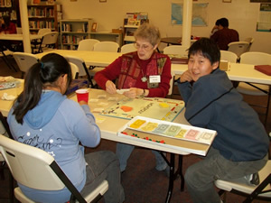

Announcements
Current Calendar
Current Soundings
Worship times
10:30 AM
Office hours
8:00 AM - noon M-F
Pastor
Mon, Tue, Thu:
9:00 AM - Noon
Wed: 3:00 - 6:00 PM
and by appointment
Fri: day off
907-747-3338

Sitka Lutheran Church
PO Box 598
224 Lincoln St
Sitka, AK 99835

GROW in Faith Formation - Youth: Grades 8 through 12
Sunday Mornings
Confirmed youth are invited and welcome to participate in leading worship.
Confirmation
Middle school youth are invited to attend a one year program of confirmation classes, service, and fellowship. We learn show God’s love to others through service projects. We want the youth to learn what it means to be a Christian in today’s world and invite them to continue the journey for the rest of their lives. We make faith come alive as we learn about the Lutheran faith and compare our beliefs with other world religions. Parents and adults are strongly encouraged to be involved this process.
Youth Group
Sunday afternoon the youth meet for fun and fellowship. All are invited to join in games, sledding, cook-outs, hikes, making food, singing, and anything else we can think of to fun together. This is also a safe place to talk about your emerging faith and how God fits in your life.
Regional and National Gatherings
We send our Youth to Regional and National ELCA Youth Gatherings. We are looking forward to the 2014 Western States Youth Gathering in California and the 2015 National Youth Gathering in Detroit.